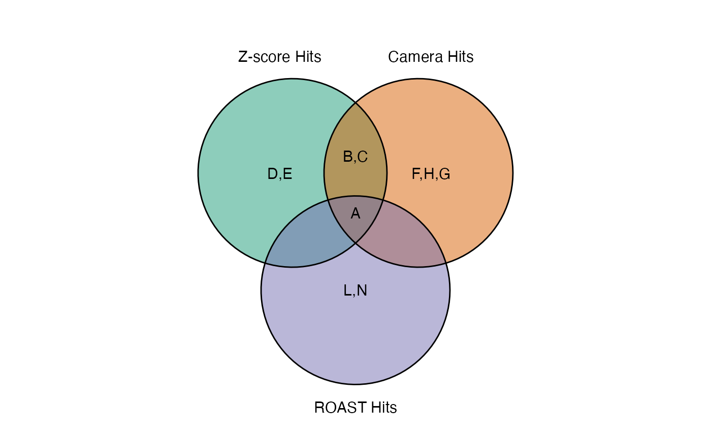

plot_common_hit.RdThis method plot the hits in common among the three methods is
a wrapper for the ggvenn function.
plot_common_hit(
hit_zscore,
hit_camera,
hit_roast,
alpha = 0.5,
stroke_size = 0.5,
set_name_size = 4,
text_color = "black",
text_size = 4,
show_percentage = FALSE,
title = "",
color = c("#1B9E77", "#D95F02", "#7570B3")
)The list of hits of the find_zscore_hit
The list of hits of the find_camera_hit
The list of hits of the find_roast_hit
A value for the opacity of the plot. Allowed values are in the range 0 to 1
Stroke size for drawing circles
Text size for set names
Text color for intersect contents
Text size for intersect contents
Show percentage for each set
The title to display above the plot
The three vector color for the veen
A vector containing the common hit
hit_zscore <- data.frame(Gene = c('A', 'B', 'C', 'D', 'E'))
hit_camera <- data.frame(Gene = c('A', 'B', 'C', 'F', 'H', 'G'))
hit_roast <- data.frame(Gene = c('A', 'L', 'N'))
plot_common_hit(hit_zscore, hit_camera, hit_roast)
#> Warning: one argument not used by format '%d'
